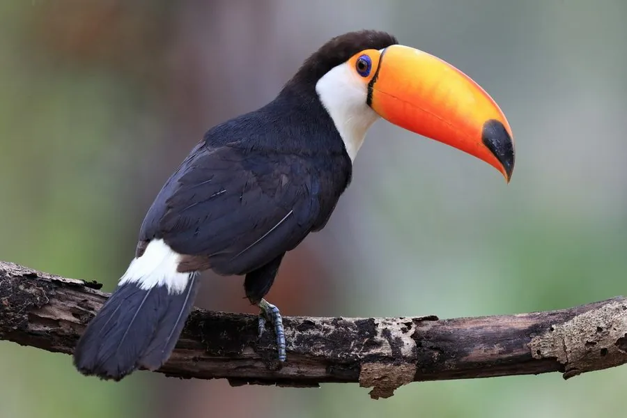

鸟类 · 动物界
托哥巨嘴鸟 Ramphastos toco

拥有世界上最大鸟喙的南美鸟类，橙黄色巨喙长如香蕉却十分轻盈，生活在热带雨林边缘和稀树草原。
- 分类
- 门脊索动物门纲鸟纲目䴕形目科巨嘴鸟科属巨嘴鸟属
- 栖息环境
- 热带雨林边缘、稀树草原、棕榈林和河岸林地，营巢于树洞
- 地理分布
- 南美洲，包括巴西、阿根廷、玻利维亚和巴拉圭等地
- 保护级别
- IUCN 无危（LC）；非中国分布物种
物种志
托哥巨嘴鸟体长 55–65 cm，体重 500–860 g，其中喙长约 18–20 cm。它的身体羽毛以黑色为主，喉部和胸部白色，眼周有一圈橙红色裸皮，最醒目的是巨大的橙黄色喙，喙尖有一块黑色斑。巨喙虽然看起来沉重，内部却是中空的骨质结构，重量很轻。
托哥巨嘴鸟分布于南美洲的巴西、阿根廷、玻利维亚、巴拉圭等地，栖息在热带雨林边缘、稀树草原、棕榈林和河岸林地。它们以果实为主食，也吃昆虫、鸟蛋和雏鸟，常成对或小群活动，把果实整颗吞下再吐出种子，是雨林种子的传播者。繁殖期在树洞中产卵，每窝 2–4 枚，孵化约 17–18 天。巨嘴鸟的巨喙还能帮助散热和调节体温，目前被列为无危物种。
形态与习性
- 食性果实为主，也吃昆虫、鸟蛋和雏鸟
- 体长55–65 cm
- 体重500–860 g
- 喙长约 18–20 cm，内部中空而轻
- 繁殖每窝 2–4 枚卵，孵化约 17–18 天
- 寿命野外约 15–20 年
- 散热巨喙血管丰富，可帮助调节体温
趣味知识
- 巨嘴鸟的喙虽然巨大，内部却是中空的，重量只有几十克。
- 它们吃果实后会把种子吐出来，是雨林植物的传播者。
- 巨喙表面布满血管，能帮助巨嘴鸟调节体温。
- 巨嘴鸟睡觉时会把巨大的喙藏在翅膀下面。